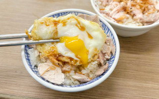
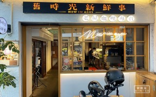
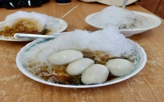

| 小吃 | |
嘉義美食 郭家雞肉飯郭家和其他知名的雞肉飯相較之下，味道較偏清淡 但也是深受在地人的喜愛，其中糯米大腸及粿仔湯是招牌必吃 來到嘉義遊玩，郭家雞肉飯也是不錯的選擇喔～ |
 |
| 餐廳 | |
舊時光新鮮事-老屋咖哩專賣|嘉義美食|舊時光新鮮事透過將嘉義地方特色與觀光景點阿里山融合到裝潢、菜單、餐點，讓顧客有著不錯的記憶點。尤其咖哩料理可以說色香味俱全，從食材挑選、餐點料理到擺盤設計都別出心裁。不過咖哩醬基本綁定了辛辣口味，對於不吃辣的朋友，需要加價升級，稍微不貼心，有些可惜。 整體來說這次在一樓用餐的體驗感還算不錯，不論是空間舒適度、餐點味道都有兼顧，餐點價格也算親民。有著地利之便，位於嘉義車站附近的舊時光新鮮事，如有到訪嘉義市，值得推薦來用餐。 |
 |
| 點心 | |
| ｜嘉義｜劉湯圓甜酒釀燒冷冰-古早味清涼消暑，湯圓軟嫩，綜合冰配料多元 |  |